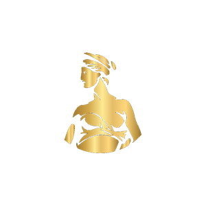
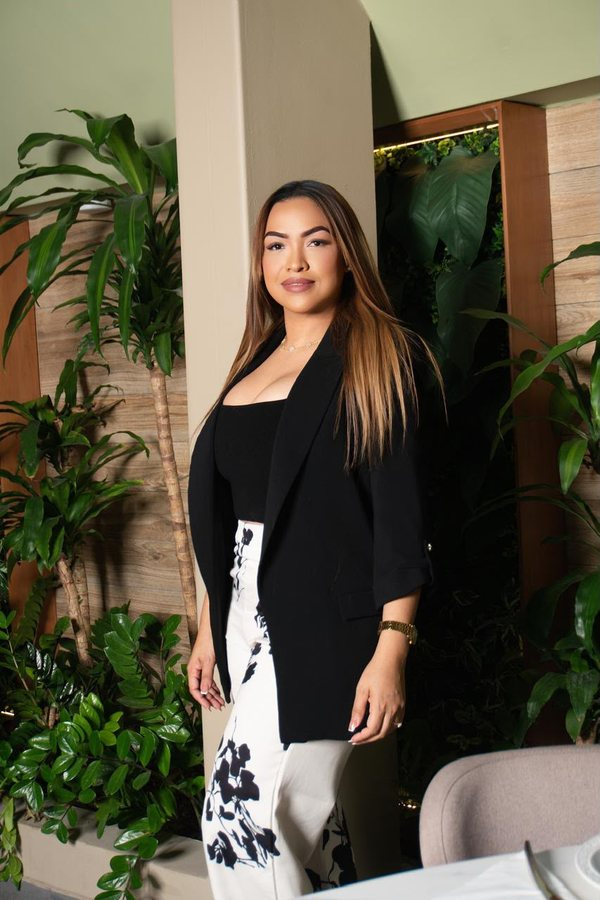
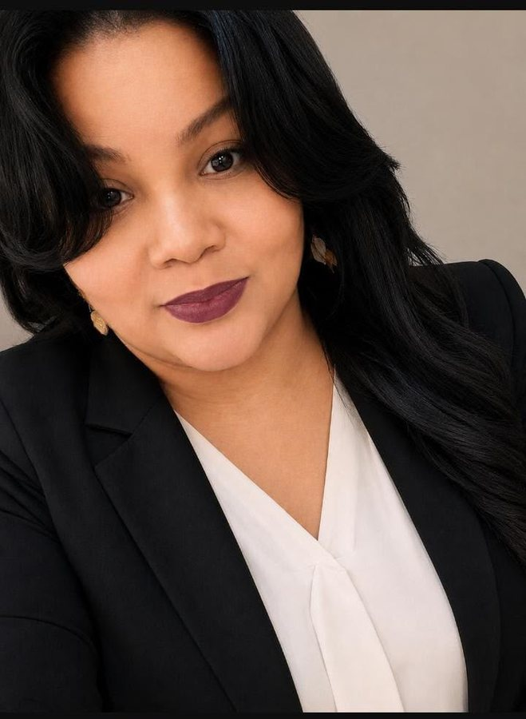
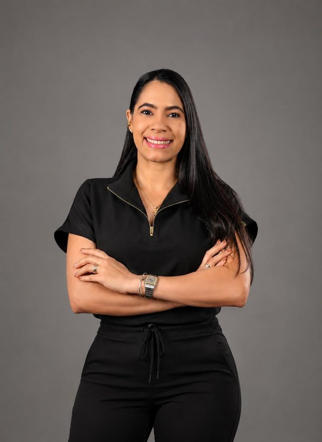
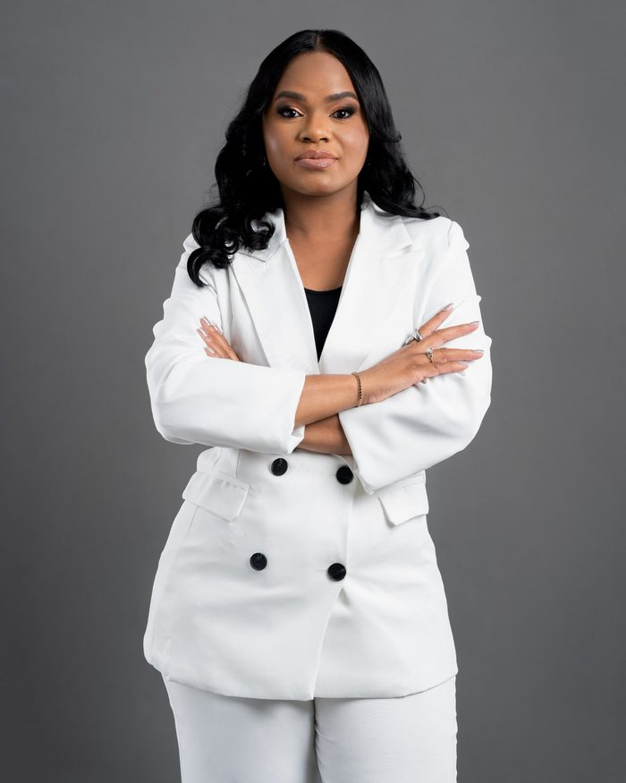
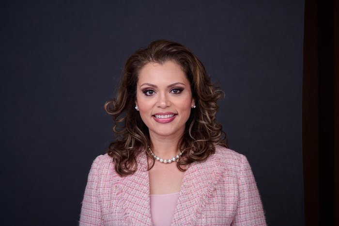
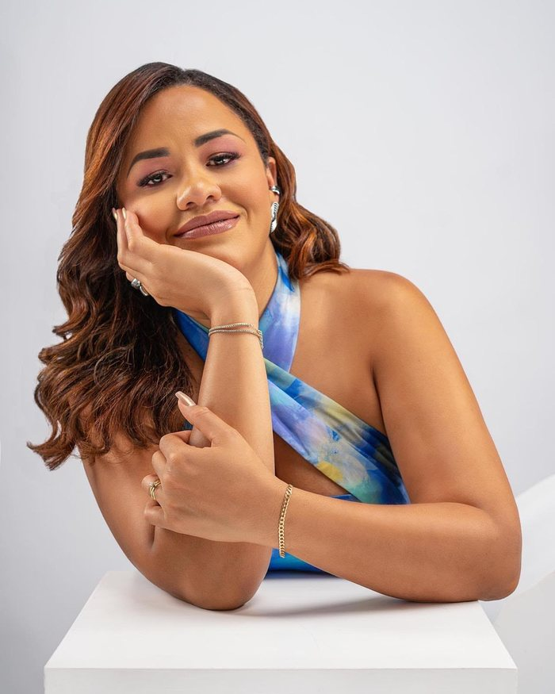
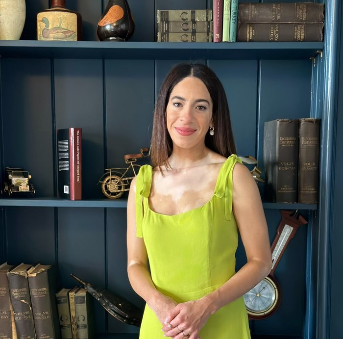
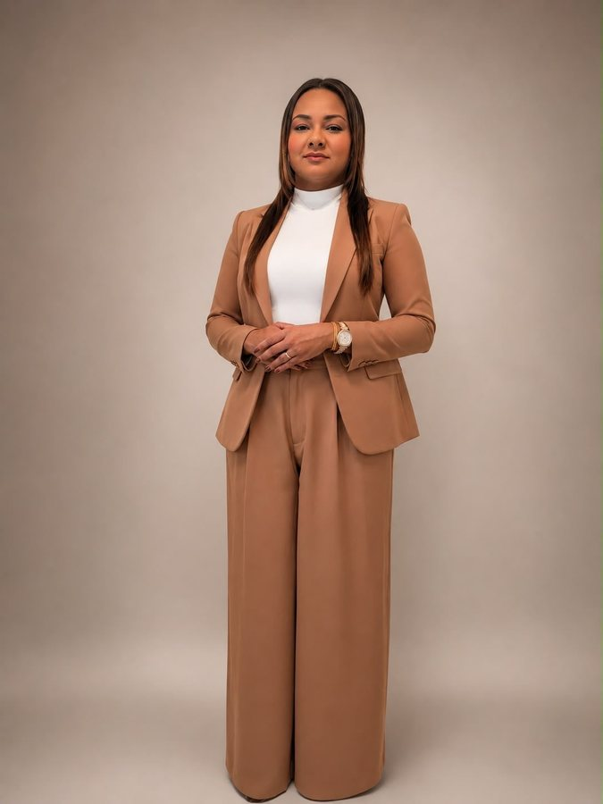
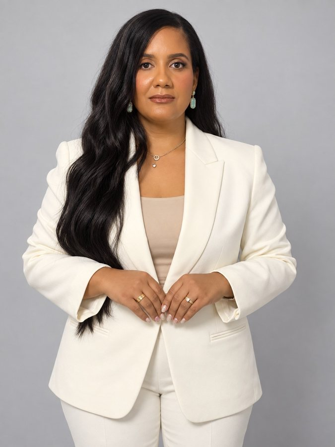

Lipoescultura 360°
Lipo de alta definición en abdomen, cintura, espalda y flancos, creando transiciones naturales entre zonas.

SRBC Agenda tu consultaSculpting & Reconstructive Bodies Center
Cirugía de contorno corporal y reconstructiva, guiada por precisión anatómica y una visión estética que celebra tus curvas naturales.
SRBC — by Dra. Noemí De La Cruz Rosa, Cirujana Plástica, Estética y Reconstructiva
Formada en Cuba, México y Brasil, la Dra. De La Cruz Rosa entiende la cirugía corporal como un oficio de escultor: evalúa cada anatomía de forma individual, prioriza la seguridad por encima de cualquier tendencia estética y acompaña a cada paciente desde la primera consulta hasta la recuperación completa. Su objetivo no es transformar identidades, sino realzar la belleza natural y devolver funcionalidad cuando el cuerpo lo necesita.
@dranoemidelacruz en InstagramCada procedimiento se planifica según la anatomía, las proporciones y los objetivos reales de cada paciente.
El cuerpo se trabaja como una sola composición — abdomen, cintura, espalda, brazos y piernas en proporción entre sí, no como zonas aisladas.
Lipo de alta definición en abdomen, cintura, espalda y flancos, creando transiciones naturales entre zonas.
Retiro de exceso de piel, corrección de diástasis abdominal y definición de cintura en un mismo procedimiento.
Proyección y forma glútea mediante transferencia de grasa autóloga, con resultados naturales y proporcionales.
Eliminación de grasa localizada en brazos, axilas y espalda para una silueta más armoniosa en la parte superior del cuerpo.
Cada procedimiento se planifica según estructura torácica, calidad de piel, volumen y proporción con el resto del cuerpo.
Selección de implante o técnica según anatomía, grosor de tejidos y expectativa estética.
Reposiciona el busto para devolverle una forma más natural, firme y simétrica.
Combina volumen y reposicionamiento en un solo procedimiento, para casos con pérdida de firmeza y volumen.
Alivio funcional junto con proporción corporal y un resultado natural.
Un rostro se equilibra, no se transforma: se evalúan tercios faciales, simetría y perfil para definir solo lo que aporta armonía — nunca de más.
Análisis de tercios faciales, simetría, perfil y calidad de piel como base de un plan hecho a medida.
Labios, pómulos, mentón, línea mandibular y surcos faciales, con resultados naturales y reversibles.
Frente, entrecejo, patas de gallo y elevación sutil de cejas, cuidando la expresividad del rostro.
Estimuladores de colágeno y skinboosters para mejorar hidratación, elasticidad y textura.
Estimulan la producción de colágeno y mejoran la flacidez en pacientes seleccionados.
Láser y tecnologías basadas en energía para cicatrices, textura y luminosidad.
Rinoplastia, mentoplastia, blefaroplastia, lifting facial y bichectomía en casos seleccionados.
"La armonización facial no busca cambiar tu rostro, sino resaltar su belleza, equilibrar sus proporciones y preservar tu identidad."
La cirugía masculina respeta la anatomía atlética natural del paciente, sin feminizar la silueta ni exagerar la marcación.
Lipo de abdomen, flancos y espalda para lograr armonía, simetría y una apariencia atlética.
Define la región pectoral masculina para una apariencia más proporcionada y firme.
Tratamiento integral de la glándula mamaria masculina con técnica combinada.
Reconstrucción funcional y estética para pacientes que han pasado por cambios significativos en su cuerpo.
Corrección del exceso de piel y tejido tras una pérdida de peso masiva, restaurando contorno y firmeza.
Reconstrucción mamaria con enfoque funcional y estético, adaptada a cada caso.
Revisión y mejora de resultados de cirugías previas, propias o realizadas en otro centro.
Un camino claro desde la primera cita hasta la recuperación completa.
Evaluación anatómica y conversación abierta sobre tus objetivos y expectativas.
Diseño quirúrgico a medida, con explicación detallada de técnica y resultados esperados.
Cirugía realizada en quirófano certificado, bajo protocolos de seguridad estrictos.
Acompañamiento post-operatorio cercano hasta ver tu resultado final.
“Desde la consulta hasta la recuperación, sentí que estaban esculpiendo un plan hecho solo para mí.”
Paciente de Lipoescultura 360°
“El resultado se ve natural, como una versión más definida de mi propio cuerpo.”
Paciente de BBL
“El acompañamiento después de la cirugía fue lo que más tranquilidad me dio.”
Paciente de Abdominoplastia
SRBC recibe pacientes de toda la región y del extranjero. Escribe directamente a la coordinadora de tu zona para resolver dudas y organizar tu viaje.

República Dominicana
República Dominicana
República Dominicana y Centro América
Puerto Rico
TX · LA · MS · AL · GA · AR · OK · NM · AZ · KS · CA, USA
Florida, USA
Rhode Island y New York, USA
Massachusetts, USA
Coordinación general de agendaAntes, después y el día a día de SRBC. Toca cualquier video para verlo completo en Instagram.
Mamoplastia & Mastopexia
Desliza y toca cualquier foto o video para verlo completo en Instagram
Completa el formulario de preevaluación o escribe directamente a la coordinadora de tu región para agendar tu consulta.